论文精读 ZeRO
ZeRO: Memory Optimizations Toward Training Trillion Parameter Models
- 论文链接：ZeRO: Memory Optimizations Toward Training Trillion Parameter Models
- 代码链接： https://github.com/microsoft/DeepSpeed
- 李沐讲解：https://www.bilibili.com/video/BV1tY411g7ZT
1.摘要
ZeRO 是一种用于大规模深度学习模型的内存优化解决方案，通过消除数据和模型并行训练中的内存冗余，同时保持了低通信量和高计算粒度。
实现了ZeRO，可以训练超过100B参数的模型，在400个GPUs上实现超线性加速。
模型训练的挑战：传统的 DP 方法不能减少每个设备的内存使用量，导致在当时 32G 显存的 GPU 上无法训练超过 14 亿个参数的模型
现有的方法：流水线并行，模型并行， CPU offloading，在功能性，内存使用，计算通信效率之间做出了取舍
作者提到模型并行（张量并行）最有潜力，需要将模型在垂直方向上进行切分，并将每个层的计算和参数在多个设备之间进行划分，当时的 11B 参数的 T5，8.3B 的 Megatron-LM 都使用了模型并行。但是这需要大量的层间通信，虽然在单个节点内表现良好，作者在两个 DGX-2 节点上使用 Megatron-LM 测试了 40B 的模型，每个 V100 GPU 的计算性能仅为 5 TFLOPS（仅为5%的理论峰值）。
作者发现内存消耗主要集中两个部分：
- 模型状态：优化器，梯度，参数
- residual states：激活值，buffer，内存碎片
针对这两个部分提出了 ZeRO（Zero Redundancy Optimizer）
2.引论（ZeRO总结）
2.1优化模型状态内存
数据并行 （DP）不足：不需要频繁地通信，但需要在每个进程中复制整个模型状态，浪费内存
模型并行（MP）不足：对模型状态分区以高效率使用内存，但会导致过细的计算粒度，需要频繁通信
整体来看，上述方法需要在整个训练过程中静态地维护所有模型状态，但在训练时不总是需要所有的模型状态
改进：
提出了 ZeRO-DP，ZeRO-powered DP ，通过分区模型状态而不是复制来消除 DP 时的内存冗余，并使用动态通信调度策略优化计算通信效率，提出了三个优化阶段
- 优化器分区（Pos）：内存减少4倍，与DP具有相同的通信量
- 梯度分区（Pos+g）：内存减少8倍，与DP具有相同的通信量
- 模型参数分区（Pos+g+p）：内存减少量与 DP 的份数成线性关系。如在 64 个 GPU 上拆分将减少64倍内存。通信仅增加 50%
图中 $Ψ$ 表示模型参数量，K 表示优化器状态的内存倍数，Nd 表示 DP 份数。在该示例中，假设基于 Adam 优化器的混合精度训练，$Ψ=7.5B，Nd=64，K=12$，其中的详细计算方法后面会介绍：
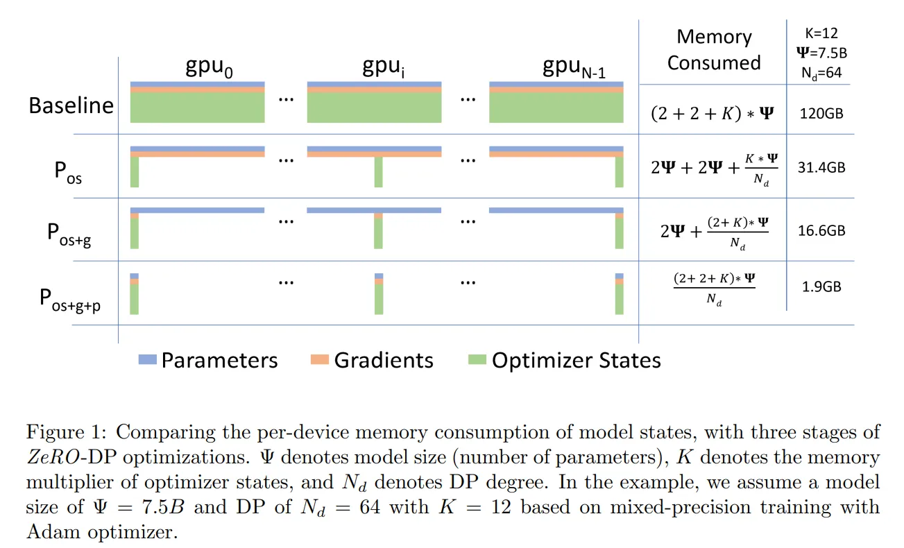
作者在这里计算了通过上述优化在 1024 张 GPU 上训练万亿参数模型，使用 fp16，需要 16TB 空间存储优化器状态，梯度和参数，每张卡占用 16GB 显存
2.2 优化 residual states 内存
为了优化激活值，buffer，内存碎片的占用，提出了** ZeRO-R**，有以下几个优化点
- 使用对激活值的 checkpointing 来节省内存，还对激活值切片，根据需要将激活数据转移至 CPU 来优化激活值的内存占用
- ZeRO-R 定义了适当的临时缓冲区大小，使内存和计算效率平衡
- 根据不同 tensor 的生命周期，主动管理内存，预防内存碎片化
综上，ZeRO 主要是由 ZeRO-DP 和 ZeRO-R 两种优化结合
2.3 ZeRO 搭配模型并行（MP）
虽然使用 ZeRO 的策略后，MP 的策略变得不那么重要了，MP 在使用时还需要修改模型，相比 DP，有诸多限制
但在激活内存占用非常大时，这时 ZeRO-R 的策略也不能满足训练优化，可以搭配 MP 减少激活内存占用。并且，在结合 ZeRO 和 MP 时，理论上可以优化到 $Nd * Nm$（MP 份数） 倍的内存占用
在小模型的情况下，单独使用 DP 会导致 batch size 过大可能无法收敛，使用 MP 可以在加速的同时减小 batch size 到合适的值，帮助模型收敛
作者进行了一些上述工作的实验，得出如下结论
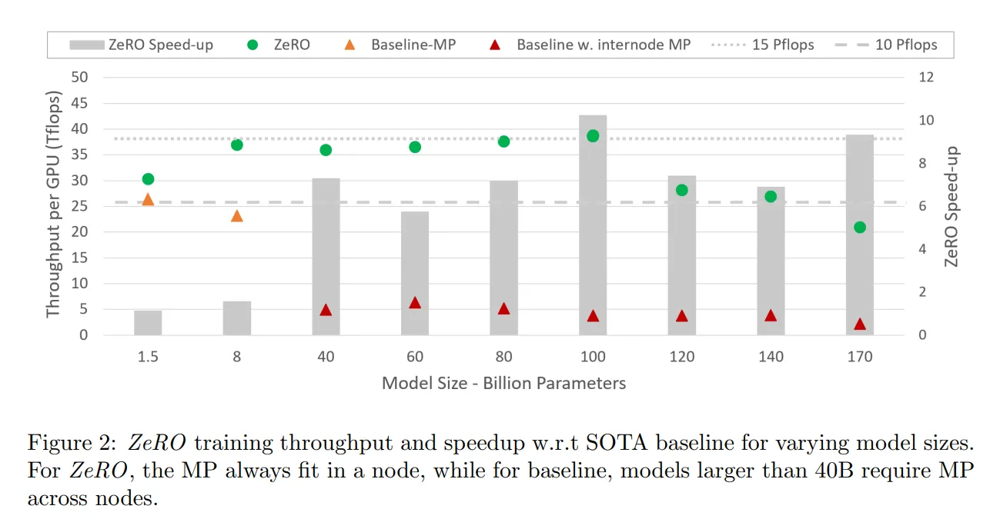
X轴不同大小的模型
- 模型大小：将 Megatron 与 MP 相结合，ZeRO-100B 可以高效地运行 1700 亿参数的模型，而单独使用 Megatron 等现有系统在 40 亿参数以上的规模上无法高效扩展。相比于SOTA，模型大小增加了8倍以上
- 训练速度：改进的内存效率提高了吞吐量和训练速度。通过在 400 台 Nvidia V100 GPU 上运行，ZeRO 可以以每个 GPU 38 TFlops 的速度训练 1000 亿参数的模型，总性能超过 15 Petaflops。与 SOTA 相比，对于相同模型大小，训练速度提高了 10 倍以上
- 可扩展性：当使用64-400个GPU时，性能呈现超线性加速，即当GPU数量加倍时，性能增加了一倍以上。这是 ZeRO-DP 的特性，它随着DP度数的增加减少了模型状态的内存占用，使得每个GPU能够承载更大的
batch_size，从而提高性能 - 大规模训练可行性：ZeRO-100B 使得 130亿参数的模型只需重构即可训练。相比之下，现有系统（如PyTorch Distributed Data Parallel）在 14 亿参数的规模上就会出现内存不足的情况
- SOTA：ZeRO 支持拥有 170 亿参数的 Turing-NLG 模型，并取得了 SOTA 的成绩
3.相关工作
3.1 DP, TP and PP
（1）DP（数据并行）
将每批输入的训练数据都在 DP 的 worker 之间进行平分。反向传播之后，需要进行通信来规约梯度，以保证优化器在各个 worker 上可以得到相同的更新。
优势：计算效率高，工程上易于实现
不足：会在所有 worker 之间复制模型和优化器，因此显存效率不高。且随着并行度的提高，每个 worker 执行的计算量是恒定的。 DP 可以在小规模上实现近乎线性扩展。但是，因为在 worker 之间规约梯度的通信成本跟模型大小成正相关，所以当模型很大或通信带宽很低时，计算效率会受到限制。
改进：梯度累积可以增加 batch size，在本地使用 micro-batch 进行多次正向和反向传播，在进行优化器更新之前再规约梯度，从而分摊通信成本。
（2）TP（模型并行）
在多个 worker 之间划分模型的各个层。 模型并行的计算和通信因模型结构而异，因此需要很大的工作量来实现。DeepSpeed 利用了 Megatron-LM 来构建基于 Transformer的大规模模型并行语言模型。
优势：会根据 worker 数量成比例地减少显存使用，这是这三种并行模式中显存效率最高的。且可以通过在模型并行 worker 之间划分激活显存，减少显存占用。
不足：每次前向和反向传播中都需要额外通信来传递激活，模型并行的计算效率很低。模型并行需要高通信带宽，并且不能很好地扩展到通信带宽受限的单个节点之外。此外，每个模型并行worker都会减少每个通信阶段之间执行的计算量，从而影响计算效率。
（3）PP（流水线并行）
将模型的各层划分为可以并行处理的阶段。当一个阶段完成一个 micro-batch 的正向传播时，激活内存将被发送给流水线的下一个阶段。类似地，当下一阶段完成反向传播时，将通过流水线把梯度反向传递回来。为了确保流水线的各个阶段能并行计算，必须同时计算多个 micro-batch
在 PipeDream 的实现中，通过保留多份旧参数来隐藏流水线泡沫，而且不会过多增加 batch size，本文通过梯度累积来实现并行的方法，在相同的 batch size下可以达到与传统 DP 和模型并行相同的训练效果。
优势：流水线并行减少的显存与流水线的阶段数成正比，这使模型的大小可以随 worker 的数量线性扩展，并且通过 micro-batch 可以有效减少 bubble。此外，流水线的通信量只和阶段边界的各层的激活值大小成正比，所以流水线并行的通信量最低。
不足：每个 worker 必须同时存储并运行的各个 micro-batch 的激活值，导致流水线第一阶段的激活内存与单个 mirco-batch 的总激活内存大致相同。不断增加流水线大小会减少每个流水线阶段的计算量，降低计算通信效率。流水线并行还对每个阶段的负载均衡有很高的要求。此外，由于水平拆分和 micro-batch，如tied-weight 和 batch-normalization 等功能难以实现。
3.2非并行化方法节省内存
（1）减少激活内存
作者引用了几篇文献举例如何优化激活内存
压缩内存
论文主要研究了在深度神经网络（DNNs）的训练中，GPU主内存限制导致训练更深层次的网络时出现瓶颈的问题。研究发现，主要的内存占用问题来自于中间层的输出（特征图）。为了解决这个问题，论文提出了一种DNN层特定的优化框架，通过对特定层（如卷积、ReLU、池化）进行编码和解码，以显著降低GPU主内存的压力。其核心方法是在两个时间点之间存储特征图的编码表示，并在反向传播时解码，而在前向传播时使用完整的特征图。作者还介绍了名为Gist的系统，它采用两类层特定的编码方案（无损和有损），利用DNN训练中现有的数值冗余，显著减少了目标特征图的内存消耗。例如，通过充分利用从池化到ReLU层的反向传播的计算特性，可以将中间特征图的存储精简至每个值仅使用1位而不是32位。通过在一流的DNN框架（CNTK）中部署这些机制，Gist在5个最先进的图像分类DNN上将内存占用降低了最多2倍，平均降低了1.8倍，仅带来4%的性能开销。此外，论文还表明，进一步的软件（例如CuDNN）和硬件（例如动态分配）优化可以进一步降低内存占用，最多可减少4.1倍
激活内存 checkpoint
论文提出了一种系统性方法，旨在减少深度神经网络训练的内存消耗。主要关注点是减少存储中间结果（特征图）和梯度所需的内存成本，因为与许多常见的深度架构中的中间特征图相比，参数的大小相对较小。论文使用计算图分析进行自动原地操作和内存共享优化。论文还提出了一种新的方法来以计算为代价来换取内存，用于特征图训练n层网络，成本为$O(\sqrt n)$的内存，仅需双倍的前向传播计算成本。在极端情况下，可以使用仅O(logn)的内存来训练n层网络的特征图
作者介绍了他们开发的系统 Checkmate，该系统旨在解决张量重新生成调度的最佳化问题。Checkmate 可以在合理的时间内（不到一小时）使用现成的MILP（Mixed Integer Linear Programming）求解器或使用近似算法找到接近最优的调度方案。这些调度方案可以用于加速数百万次的训练迭代。除了减少训练成本外，Checkmate还可以使现实世界中的网络能够使用比以前大约多5.1倍的输入尺寸进行训练
实时内存管理
作者提出了SuperNeurons 动态的GPU内存调度运行时策略，包括三种内存优化技术：Liveness Analysis（存活性分析）、Unified Tensor Pool（统一张量池）和 Cost-Aware Recomputation（成本感知的重计算）。这些技术共同有效地将网络整体的内存峰值使用量降低到各层中的最大内存使用量。此外，SuperNeurons还解决了这些内存节省技术中的性能问题。鉴于有限的GPU DRAM，SuperNeurons不仅提供了训练所需的内存，还动态分配内存用于卷积工作空间，以实现高性能的训练。SuperNeurons 能够在一个12GB的 K40c GPU上训练包含104个基本网络层的 ResNet2500
本文的 ZeRO-R 同时使用了压缩内存和 checkpoint 技术
（2）CPU Offload
这里引用了其它两种内存卸载方法
优化执行算法
论文介绍了一种名为“L2L”的新型执行算法，它采用一种中继式执行技术。在任何给定时刻，设备内存主要仅填充了正在执行的层的占用空间。模型驻留在DRAM内存中，连接到CPU或FPGA，作为一种称为“eager param-server（EPS）”的实体。为了解决将参数传递到EPS的带宽问题，该模型采用了一种逐层执行的方式，而不是传统的小批量执行整个模型的方法。这意味着模型以多个微批次的方式执行，而不是传统的小批量方式。这种方法可以显著减少内存占用，并提高吞吐量
虚拟内存 Offload
论文提出了一种名为**vDNN**的虚拟化DNN，主要思想是*保守地分配GPU内存，以立即使用给定层的计算，从而大幅减少最大和平均内存使用 \*。vDNN 利用分配的数据结构的数据依赖性，特别是占内存使用量大部分的中间特征映射，在 GPU 和 CPU 内存之间释放或移动这些中间数据。具体来说，如果没有进一步的重用，就积极地从 GPU 内存中释放这些特征映射，如果存在进一步的重用，但不是立即需要，就从CPU内存卸载/预取。通过 DNN 络的层间内存访问和重用模式，内存管理器智能地将正常的 DNN 计算与卸载/预取/释放 操作重叠，几乎没有性能损失
上面的文献利用计算节点的异构性，分别通过算法设计或虚拟化内存将模型状态转移到CPU内存。但是这导致有50%的时间被浪费在GPU-CPU-GPU传输。ZeRO的不同之处在于，它显著降低了内存消耗，而无需将模型状态存储到CPU内存中。在极少数情况下，ZeRO-R可能只针对非常大的模型才 offload 激活 checkpoint，以提高性能
（3）Memory Efficient Optimizer
自适应梯度优化器如 Adagrad 和 Adam 方法在 NLP 任务中取得了不错的性能，然而这些方法为每个参数维护了二阶统计信息，因此引入了显著的内存开销，限制了可使用的模型大小以及每个小批量中的示例数量。下面是过去提出的优化内存的文献
自适应学习率
论文提出了一种名为 Adafactor 的自适应学习率优化算法，为了减少内存占用，仅维护每行和每列的移动平均和二阶矩的和，然后基于这些和来估计每个参数的二阶矩。这种方法在实验中表现出与传统方法相似的结果。最后，作者还提出了根据参数本身的规模来调整参数更新的方法
自适应优化器
作者提出了一种自适应优化算法 SM3，该算法通过使用参数的覆盖集合来减少内存需求，其中每个集合都对应一个变量，通过维护一组覆盖集合，并对每个集合的最大方差进行求和，确定每个梯度条目的学习率。通过减少内存需求实现了两倍的速度提升
上面的文献通过获取模型参数或梯度的粗粒度统计数据来减少自适应优化方法的内存消耗，这可能会对模型收敛保证产生影响。ZeRO与这些工作不同，它的优化不会改变模型优化方法或影响模型收敛，但会有效地减少每个设备的优化器状态和梯度的内存占用
3.3 训练优化器
对于大型模型，自适应优化（Adaptive）方法对于达到 SOTA 性能和精度至关重要。与 SGD 相比，它以显著的内存占用为代价，维护每个模型参数和梯度的细粒度一阶和二阶统计信息。ZeRO可以将这些优化器的内存占用减少几个数量级，使这些复杂的优化方法在训练大模型时非常有效。它还允许开发和使用更复杂、内存消耗更大、收敛性更好的优化器
4.优化内存占用
前面提到内存消耗主要集中在
- 模型状态：优化器，梯度，参数
- Residual states：激活值，buffer，内存碎片
下面展开讨论为何会这样
4.1 模型状态：优化器状态，梯度与参数
在使用adam优化器训练时，Adam使用指数移动平均来计算梯度，这需要保存梯度的拷贝，以稳定更新参数。Adam还使用了自适应学习率机制，会为每个参数自动调整学习率。学习率的自适应性依赖于每个参数的梯度方差。为了计算梯度方差，就需要保存梯度的平方的移动平均值，以便在参数更新时更好地适应局部梯度的特性。
在使用混合精度训练时，**将参数和梯度存储为 fp16，并在前反向传播时都使用fp16更新，但是为了反向传播结束后保证计算的精确，需要保存参数和优化器状态的fp32**副本，以Adam优化器为例，使用Adam对具有$Ψ$个参数的模型进行混合精度训练需要足够的内存来存储参数和梯度的fp16副本，内存需求分别为 $2Ψ$ 和 $2Ψ$ 字节（参数和梯度）。此外，还需要存储优化器状态：参数、动量和方差的 fp32副本，内存需求分别为 $4Ψ$、$4Ψ$ 和 $4Ψ$ 字节（一个w和两个状态）。文中使用 K 来表示优化器状态的内存乘数，即存储它们所需的额外内存为 $KΨ$ 字节。混合精度 Adam 的 K 值为 12。这导致了 $ 2+2+12=16 Ψ $字节的内存需求。对于像 GPT-2 这样有15亿参数的模型，至少需要24GB的内存，远远高于 3GB 内存来存储 fp16 参数的需求
4.2 Residual 内存消耗
在训练过程中，使用的激活函数会占用大量内存。以 GPT-2 模型为例，当序列长度为 1K，batch_size为 32时，1.5B 参数的模型需要大约 60GB 的内存.
计算公式：$激活值内存 = Transformer 层数 × hidden_dim × batch_size × seq_len × Transformer 层数$
使用激活值 checkpoint 方法可以减少激活函数内存的消耗，会增加 33% 的 recompute 开销，但可以将激活函数内存消耗降低到约 8GB 但对于更大的模型，激活函数的内存消耗仍然可能非常大。如一个拥有 1000 亿参数的 GPT-like 模型，在 batch_size为32 时，即使使用了激活值 checkpoint 仍需60GB的内存。此外，对于大型模型，用于存储中间结果的临时 buffer 也会占用相当大的内存。例如，对梯度 all_reduce或梯度计算时会将所有梯度融合到一个 flattened buffer 中，尽管梯度可以以 fp16存储，但 buffer 可能还是 fp32。对于一个具有 15 亿参数的模型，一个 flattened fp32 buffer 要占用6GB的内存
此外，内存碎片的问题也要注意，在极端情况下，内存碎片可浪费 30% 的内存
5.ZeRO
ZeRO 提出了两组优化：
- ZeRO-DP：优化模型状态内存消耗
- ZeRO-R：优化 Residual 内存消耗
5.1 ZeRO-DP
DP：优点：计算粒度高，通信低；不足： DP 进程之间冗余存储
MP：优点：通过分区模型利用内存；不足：计算粒度降低
ZeRO-DP 通过分区模型状态并使用动态的通信调度，同时有 DP 和 MP 的优点
假设两块卡做数据并行，一个层
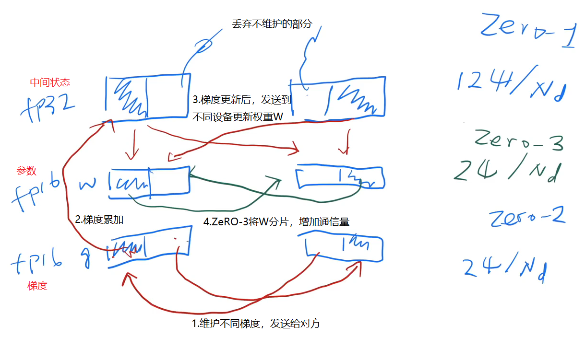
梯度（FP16）：两个卡维护的梯度不同，不同发送给对方，来得到全局的梯度
状态（FP32）：得到梯度后，将各个部分梯度累加，得到中间状态；再将中间状态发送到权重参数W（FP16）上，同一块卡直接复制，不同卡进行发送
（1）Pos ： Optimizer State Partitioning
在DP中，通过将优化器的状态分成N个分区，使得每个DP进程只更新对应的分区的优化器状态，也就是1/N的总优化器状态参数量
（2）Pg ：Gradient Partitioning
梯度的计算被分为不同的分区，每个 DP 进程只处理和更新对应参数分区的梯度。文中还采用了一种 ucketization 策略，将同一参数分区的梯度进行分组，并一次性对整个组进行归约操作。类似于NVIDIA的 AMP 优化器中将全局梯度计算进行 bucketization 以重叠计算通信。通过在最后一个分区进行 all-reduce，以减少内存占用，实现计算通信重叠
（3）Pp ： Parameter Partitioning
参数分区是在 DP 训练中减少内存消耗的一种方式。每个进程只存储与其分区相对应的参数，当需要使用到其他分区的参数进行前向和反向传播时，通过 broadcast 从相应的 DP 进程接收这些参数
（4）Implication on Model Size
在 1024 DP 的情况下，搭配 Pos+g+p，可以实现 1.5 万亿参数的训练，如果只使用 DP 训练，仅能训练 1.5 Billion 参数量
（5）内存消耗对比
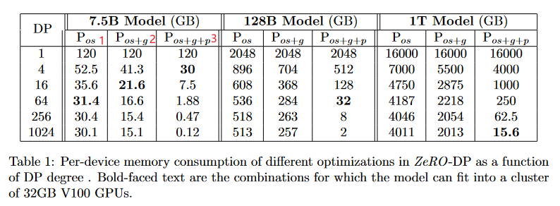
（6）通信量分析
1）DP 通信量
在每次反向后执行 all-reduce 平均，这种 all-reduce 会在大模型上会完全依赖通信带宽，现在的 all-reduce 通过流水线执行 reduce-scatter 再 all-gather 达到 all-reduce 的效果，会有两倍的数据通信量
2）ZeRO-DP 通信量
Pos+g ： Zero-2
因为每个进程只保存其分区的梯度，对梯度进程进行 scatter-reduce，再执行 all-gather，通信量与 DP 相同，为 $2Ψ$
Pos+g+p ： Zero-3
通过参数分区，每个进程只存储更新的参数。在计算前向传播结果前，每个分区的进程将权重 braodcast 到所有进程，在前向传播时，通过流水线执行 all-gather 接受其他分区的参数，以减少内存占用，前向传播后，丢弃权重。在反向传播时需要再次 all-gather，因此，总通信量为$ (Ψ * N) / N = Ψ $
综上，总通信量为 3Ψ，为 DP 的 1.5 倍
5.2 ZeRO-R
将使用的内存分为两类：
- 长期存在：前向传播时的激活值 checkpoint，反向传播时的参数梯度
- 短期存在：前向传播时的 recompute，反向传播时的激活值梯度
ZeRO-R 通过将激活值 checkpoint 和 梯度 移动到预先分配的连续 buffer 中，进行实时内存碎片整理，还减少了查找空闲连续内存的时间（带宽换时间）
ZeRO-R主要用于模型并行，假设有一个层，又对应的输入，假设有2块卡。
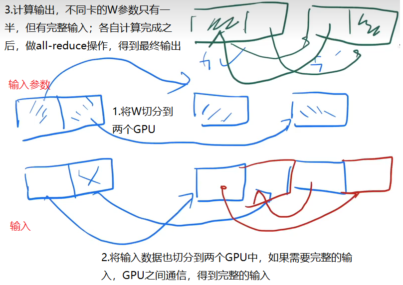
（1）Pa ：Partitioned Activation Checkpointing
通过激活值 checkpoint 分区，消除了 MP 中的内存冗余，只有在计算中需要使用激活时，才会将激活值复制
在模型中一层完成前向完成时，会将激活值分区到所有并行进程上，如果在反向传播过程中被使用时，则使用 all-gather 重新创建激活值的 copy
（2）$C_B$：Constant Size Buffers
因为做了切片，需要不断通信，当机器数变多之后，一个层的切片数据就变得很多，每一次发出去的数据可能很小，在带宽很大的情况下，这样发是不划算的。
使用固定大小的Buffer，等到填满后，再发出去。
通过保持足够大的常量 buffer ，在计算之前将所有参数融合到这个单独的 buffer 中，可以加速内存读写效率.
（3）$M_D$ : Memory Defragmentation
前向传播过程中通过激活值 checkpoint 只保留了部分激活值，其余的激活值会被丢弃，因为它们在后向传播时可以重新计算。同样，在后向传播过程中，参数梯度是长期存在的，而激活梯度和其他用于计算参数梯度的缓冲区是短期存在的。这种长期和短期内存的交织导致了内存碎片化的问题
文中提出了 In-place Activation Reuse 的方法，在反向传播过程中可以重复使用激活值的内存，而无需每次都重新分配内存。将不再需要的激活值内存标记为可重用，并在下一次需要相同大小内存的地方重用它们。减少了内存分配和释放的次数，减少了碎片化.
（4）通信量分析
下面通过分析分区激活值 checkpoint（Pa）与MP，DP通信量决定使用Pa还是Pa+cpu
Pa 的通信量权衡取决于模型大小、checkpoint 策略和 MP 策略。论文使用 Megatron-LM 实现的模型背景下进行分析。 在带有激活值 checkpoint 的 Megatron-LM 中，每个transformer在正向传播中执行两个大小为 $batch × seq_length × hidden_dim$ 的 all-reduce 操作用于正向传播时的重计算，另外两个 all-reduce 操作用于反向传播。每个块的总通信量为 $12 × seq length × hidden dim$，因为 all-reduce 的通信量为$ 2 × message_size $。 当 ZeRO-R 对激活值 checkpoint 进行分区时，在每个激活值 checkpoint 上的反向传播的正向重新计算之前需要额外的 all-gather 操作。会检查每个transformer块的输入激活，需要一个 all-gather，因此，Pa 的通信量为 $seq_length ∗ hidden_dim$。因为 all-gather 的通信量为 message_size，计算 Pa 的总通信量小于 MP 原始通信量的 10%。当MP与DP结合使用时，Pa可用于将Pa通信量减少一个数量级，而模型并行通信量增加10%，并在 DP 通信成为性能瓶颈时显著提高效率。另外，Pa将激活内存消耗降低了 MP 并行度，从而允许按比例增加 batch_size。由于 Pa 导致 batch_size 增加一个数量级可能导致 DP 通信量减少一个数量级。 如果采用 Pa+cpu，分区激活值 checkpoint 将卸载到cpu，就不再需要激活内存了，与Pa相比，cpu内存之间增加了2倍的数据移动。在极端情况下，DP 通信量是主要瓶颈，因为即使使用Pa，batch_size 也很小，在小batch_size的情况下，只要 cpu 数据传输开销小于DP通信量开销，Pa+cpu 就可以通过增加 batch\_size 来提高效率。在给定模型和硬件特性的情况下，可以利用上述分析来决定是否以及何时使用Pa还是Pa+cpu
6.万亿参数训练
仅使用 DP，ZeRO能够在1024个GPU上容纳超过1万亿参数的模型。此外，如下表所示，当与 MP 结合使用时，每个DGX2节点内使用16路MP，跨节点使用64路DP，ZeRO能够在1024个GPU上运行超过1万亿参数的模型，但训练时长会超过一年，期待未来算力提升
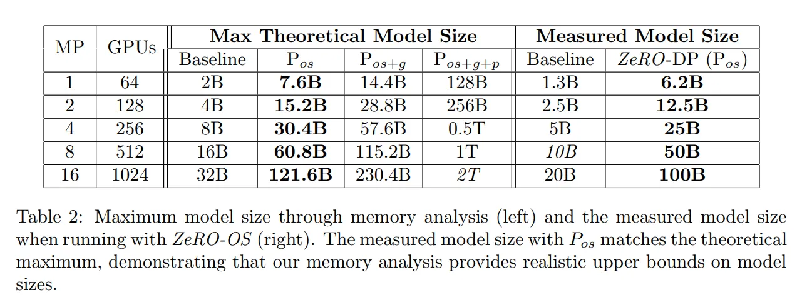
7.实验评估
实施：基于 PyTorch 的 ZeRO-100B，包括Pos+g 和 ZeRO-R 中的全部优化点
硬件：由 400 个 V100 GPU（25个DGX-2节点）组成的集群，节点间通信带宽为800 Gbps
Baseline：没有MP的实验使用了 torch 的 DDP，MP 的实验使用 Megatron-LM 的 MP
ZeRO：没有MP的实验使用了 ZeRO-100B 中基于 ZeRO 的 DP 实现。MP 的实验将 ZeRO-100B 中的 ZeRO-powered DP 与 Megatron-LM 的 MP 相结合
模型：基于GPT-2的 transformer 模型，下表是参数配置
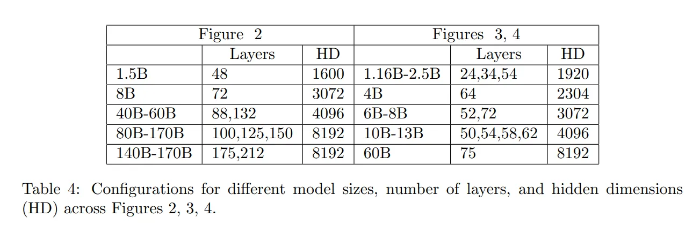
7.1 Speed and Model size
Baseline 的 Megatron MP 在模型规模增大时性能会快速下降，因为 MP 在 GPU 之间产生了高额通信量，而在超过单个节点以适应更大的模型时，每条链路（NVSwitch）的通信带宽从300GB/秒下降为12.5GB/秒，导致性能严重下降。对比之下，ZeRO-100B 会有 10 倍的训练速度提升
7.2 Super-Linear Scalability
如下图所示，使用ZeRO-100B可以实现超线性可扩展性，并通过增加 DP 并行度来提高每个GPU的吞吐量，从而适应更大的 batch_size
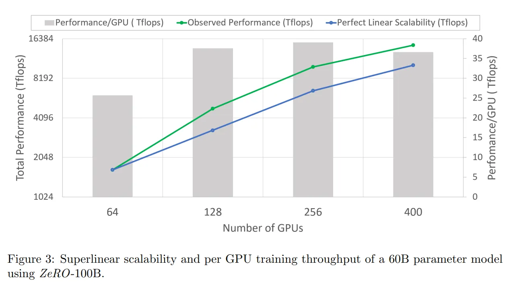
7.3 Democratizing Large Model Training
下图使用128个GPU，ZeRO-100B 可以训练13B参数的模型，平均每个GPU吞吐量超过40 TFlops。相比之下，没有使用ZeRO，仅使用DP的最大可训练模型仅有 1.4B 参数，每个 GPU 的吞吐量不到 20 TFlops。此外，由于没有 MP 带来的通信开销，这些模型可以在具有较低端计算节点上进行训练，无需 NVLINK 或 NVSwitch 这种高速互联方式
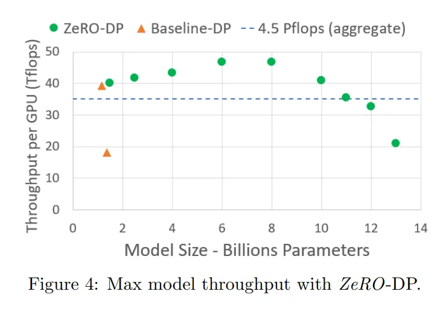
7.4 Memory and Performance Analysis
作者讨论了不同优化方法对最大模型大小、内存消耗和性能的影响。作者将这些优化方法分为配置1到5（C1-C5），如下表所示，通过使用固定 batch_size和 MP 为16，观察启用不同ZeRO优化的可训练模型的最大尺寸
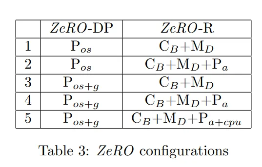
在最大模型尺寸方面，如 Figure 6 所示，通过使用 Pa 优化，模型大小从40B增加到了60B。而通过使用Pos+g优化，在C2的基础上，模型大小增加到了140B，这是因为与C2相比，该优化使模型状态的内存需求减半。使用C5进一步减少了激活内存，将分区激活值 checkpoint 转移到CPU内存，使模型大小增加到150B
对于每个训练迭代中 PyTorch 缓存的最大内存，如 Figure 7 所示，作者观察了40B和100B模型的情况。从C1到C2，缓存的内存大小如期减少。C2到C3的内存消耗差异取决于模型状态与激活内存的大小关系，当激活内存较大时，差异可能增加，当模型状态较大时，差异可能减小。值得注意的是，在40B模型中，从C4到C5时，缓存的内存大小没有减少，但在100B模型中有减少。这是因为100B的激活内存较大，减少不明显。作者指出，当我们处理非常大的模型时，Pa+cpu优化可用于适应更大的 batch_size
对于不同优化设置的最佳性能，如 Figure 8 所示，性能提升与内存消耗的减少相对应。较低的内存消耗可以实现更大的 batch\_size，从而提高性能。唯一的例外是60B参数模型在C4和C5之间的性能下降。尽管内存消耗较低，但C5会导致激活在CPU之间移动，这通常会导致性能下降，除非模型非常大以至于无法在没有C5的情况下运行，或者可以在没有C5的情况下运行的 batch_size很小（例如在 Figure 8 中具有170B参数的模型）。在训练过程中，Pa+cpu优化只在有益时才启用
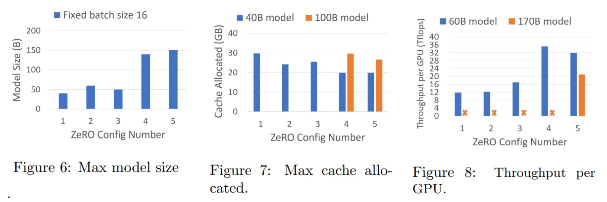
7.5 Turing-NLG, the SOTA language model with 17B parameters
下图展示了在300K次迭代中与之前最先进的Megatron-LM 8.3B参数模型的验证 Perplexity 对比，使用 ZeRO 训练得到的模型指标优于 Megatron-LM，此外 ZeRO100B 还实现了持续的 41.4 TFlops/GPU的吞吐量
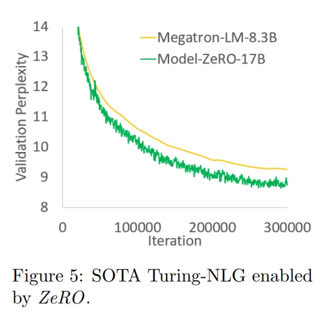
8.结论
通讯换内存